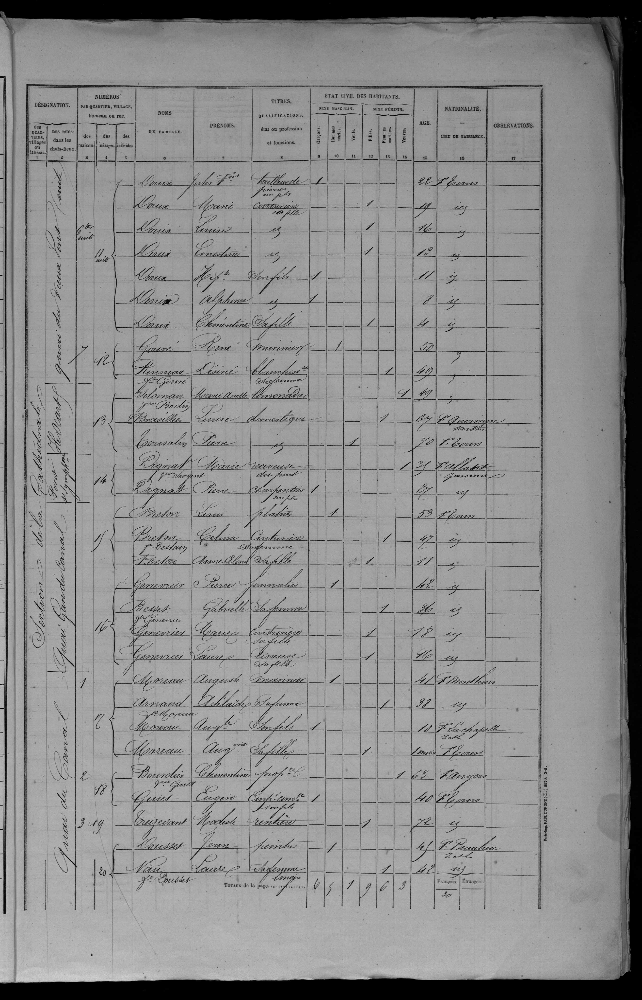

| Quartier | Ménage | Nom | Prénom | Rôle | Sexe | Statut | Âge | Nationalité | Naissance | Observations |
|---|---|---|---|---|---|---|---|---|---|---|
| SectionCathédrale | 11suite | Douin | Jules François | TailleurPierre | M | 22 | Française | Tours | ||
| SectionCathédrale | 11suite | Douin | Marie | Couturière | F | 19 | Française | Tours | ||
| SectionCathédrale | 11suite | Douin | Louise | Fille | F | 16 | Française | Tours | ||
| SectionCathédrale | 11suite | Douin | Ernestine | Fille | F | 13 | Française | Tours | ||
| SectionCathédrale | 11suite | Douin | Hippolyte | Fils | M | 11 | Française | Tours | ||
| SectionCathédrale | 11suite | Douin | Alphonse | Fils | M | 8 | Française | Tours | ||
| SectionCathédrale | 11suite | Douin | Clémentine | Fille | F | 4 | Française | Tours | ||
| SectionCathédrale | 12 | Gouré | René | Marinier | M | 50 | Française | |||
| SectionCathédrale | 12 | Ruisseau / Gouré | Désirée | Blanchisseuse | F | 49 | Française | Tours | ||
| SectionCathédrale | 13 | SolomanBodin | Marie Anette | F | 49 | Française | Tours | |||
| SectionCathédrale | 13 | Brasillier | Louise | Domestique | F | 67 | Française | Sarthe | ||
| SectionCathédrale | 13 | Tousalin | Pierre | Domestique | M | 70 | Française | Tours | ||
| SectionCathédrale | 14 | DignatSergent | Marie | Receveuse | F | 35 | Française | Garonne | ||
| SectionCathédrale | 14 | Dignat | Pierre | Charpentier | M | 27 | Française | Garonne | ||
| SectionCathédrale | 15 | Breton | Louis | Platrier | M | 53 | Française | Tours | ||
| SectionCathédrale | 15 | Breton / Deslain | Celina | Couturière | F | 47 | Française | Tours | ||
| SectionCathédrale | 15 | Breton | Anne Celina | Fille | F | 11 | Française | Tours | ||
| SectionCathédrale | 16 | Genevrier | Pierre | Journalier | M | 42 | Française | Tours | ||
| SectionCathédrale | 16 | Besset / Genevrier | Gabrielle | Femme | F | 36 | Française | Tours | ||
| SectionCathédrale | 16 | Genevrier | Marie | Couturière | F | 18 | Française | Tours | ||
| SectionCathédrale | 16 | Genevrier | Laure | Tisseuse | F | 16 | Française | Tours | ||
| SectionCathédrale | 17 | Moreau | Auguste | Marinier | M | 41 | Française | Montlouis | ||
| SectionCathédrale | 17 | Arnaud / Moreau | Adélaïde | Femme | F | 38 | Française | Montlouis | ||
| SectionCathédrale | 17 | Moreau | Auguste | Fils | M | 10 | Française | La Chapelle | ||
| SectionCathédrale | 17 | Moreau | Augustine | Fille | F | 1month | Française | Tours | ||
| SectionCathédrale | 18 | BourdierGuiet | Clémentine | Propriétaire | F | 63 | Française | Angers | ||
| SectionCathédrale | 18 | Guiet | Eugène | Employé | M | 40 | Française | Tours | ||
| SectionCathédrale | 19 | Treizevant | Modeste | Rentière | F | 72 | Française | Tours | ||
| SectionCathédrale | 20 | Dousset | Marie | Peintre | M | 45 | Française | Beaulieu | ||
| SectionCathédrale | 20 | Nau / Dousset | Marie | Lingère | F | 42 | Française | Beaulieu |
Nombre de personnes recensées: 30

Publication :Archives départementales d'Indre-et-Loire 6 rue des Ursulines 37000 Tours France
Source :Paris Imprimerie Paul Dupont 1872